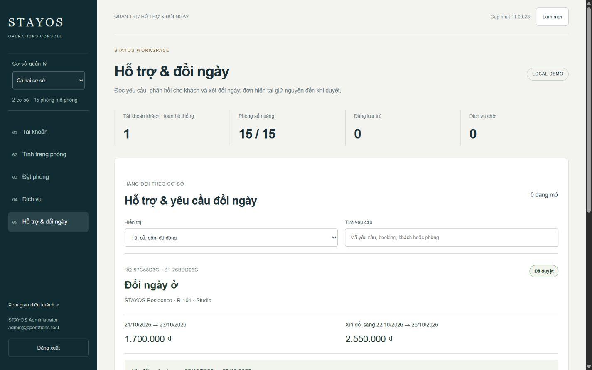
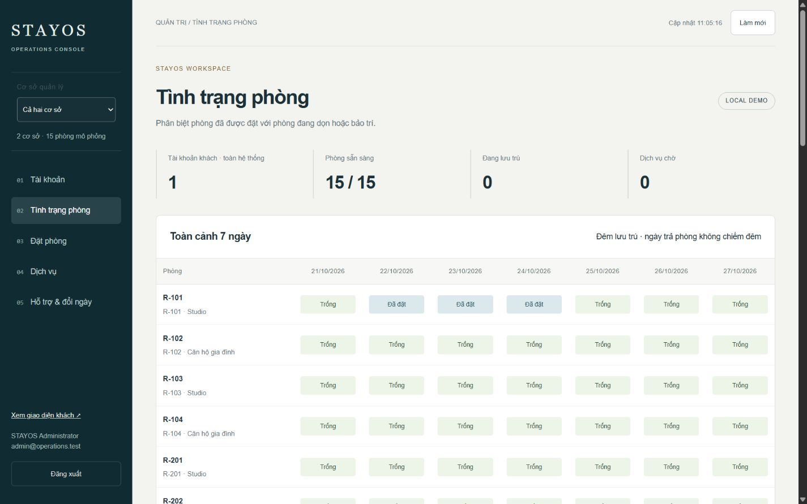
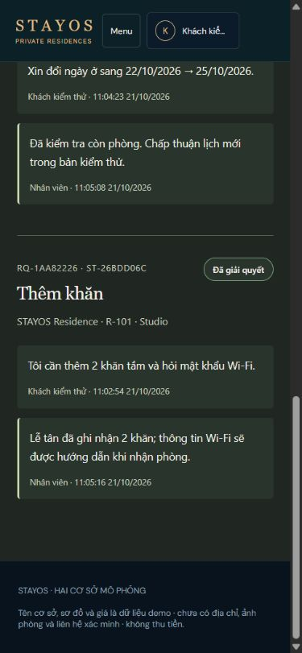
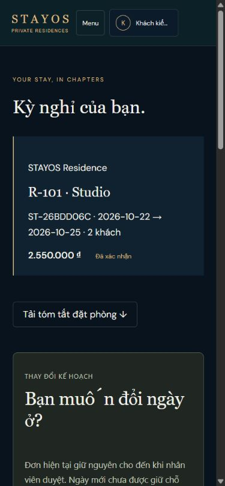

Khách gửi → nhân viên nhận
Yêu cầu có mã, trạng thái và hội thoại lưu trên máy chủ. Khăn/Wi-Fi không trở thành gợi ý mua bữa tối. Khách xem lại được sau khi đăng nhập lại.
Cập nhật mới hơn: hướng B, gói và bước xem lại đã vào booking chính →. Phần bên dưới là ảnh/báo cáo vận hành trước đợt tích hợp; không dùng trạng thái đóng trong ảnh cũ để chứng minh đã phục vụ.
LƯU TRỮ ĐỢT VẬN HÀNH · 21.10.2026
Hoàn thiện hỗ trợ hai chiều, xin đổi ngày và lịch phòng trên hệ thống booking hiện có. Các ảnh dưới đây là giao diện chạy thật với dữ liệu kiểm thử riêng, không phải mockup AI.
Yêu cầu có mã, trạng thái và hội thoại lưu trên máy chủ. Khăn/Wi-Fi không trở thành gợi ý mua bữa tối. Khách xem lại được sau khi đăng nhập lại.
Hiện tổng cũ, tổng mới và chênh lệch trước khi gửi. Đơn hiện tại giữ nguyên khi chờ. Nhân viên duyệt mới kiểm tra tồn phòng lần cuối và ghi lịch mới.
Hàng đợi hỗ trợ, lọc/tìm yêu cầu và lịch bảy ngày. Đêm trả phòng không bị đánh dấu đã đặt. Đơn đã hủy không chiếm lịch.
Tải bản tóm tắt TXT từ giá, phòng và chính sách đã lưu. Giữ lịch sử đổi lịch; không tự ghép thông tin phòng hiện tại vào đơn cũ.




Thanh toán/hoàn tiền và gửi email chưa được kết nối. Ảnh, địa chỉ, liên hệ và chính sách thực tế cần xác nhận. Gallery/gói quyền lợi hướng B vẫn nằm trong review, không tự đưa các điều kiện kinh doanh chưa duyệt vào đơn chính.
Học quy trình từ Airbnb — đề nghị đổi lịch và Booking.com — chính sách theo vòng đời đơn; không sao chép chính sách kinh doanh của họ.